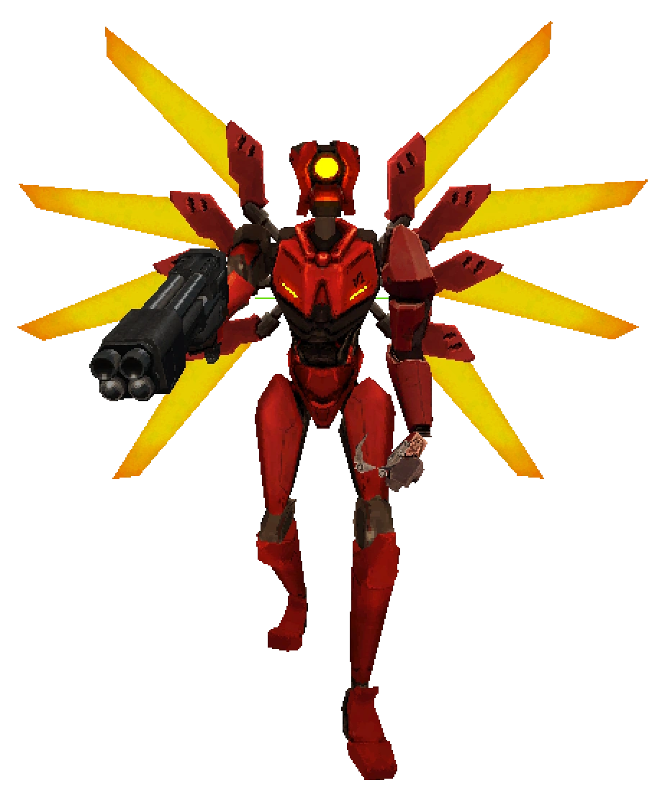

V2 is the first major roadblock in your journey. This fast and unpredictable enemy mirrors many of your own abilities, including dashing, wall jumping, and sliding. It is equipped with its own Piercer Revolver and Core Eject Shotgun, which it uses to seamlessly switch between long and close-range combat. Due to its small size and erratic movement, it can be a difficult target to hit.
After defeating V2, it will get back up and dash through the skylight, leaving its Knuckleblaster behind. This powerful weapon can be picked up by the player and equipped.
V2 is a fast and unpredictable foe that moves similarly to V1, making it hard to keep track of and harder to hit. It has a variety of attacks, including the Revolver combo, Core Eject Shotgun, and charged Piercer shot. Its ability to quickly switch between close and long-range combat gives it versatility, making it a dangerous opponent at all distances. While V2 cannot absorb blood like V1, any damage dealt will persist until the boss fight restarts.
V2's movement patterns depend on the color of its wings, each indicating a different behavior:
V2 becomes enraged when kept at a minimum distance for too long. This is indicated by the rising gauge under its health bar. Once the gauge fills, V2 will enter its enraged state, gaining a [+ENRAGED] style bonus. While enraged, V2's movement speed increases, it cancels slides earlier to chase the player more accurately, and its Piercer charge shots have no cooldown. V2's rage will wear off after remaining within its preferred range for a period of time.
V2 is a challenging foe due to its unpredictable movement patterns. To counter its speed, try using the Attractor Nailgun or boosting projectile weapons such as the shotgun. Projectile weapons like the Rocket Launcher can also be used to juggle V2, but its constant movement makes hitting it with projectiles difficult. Almost all of V2's attacks can be parried, which helps heal up to the hard damage limit. Managing stamina and utilizing sliding for evasion is crucial to surviving this encounter.
V2's arena contains 4 destructible pillars that can be used for cover or to block attacks. However, these pillars can be destroyed by V2's Charged Shot and Core Eject attacks, as well as some of V1's own attacks.
In terms of weapons, V1 holds an advantage in weapon diversity, as V2 only has the default Piercer Revolver and Core Eject Shotgun. The player may have the alternate revolvers by now, giving them an edge in the fight. If you have access to the Attractor Nailgun or Sawblade Launcher, you can set traps or use area denial tactics to make V2 more manageable.
For those looking to quickly finish the fight, Coin Punching can potentially kill V2 during its bowing animation, but it is not advisable for a fair fight. On Brutal difficulty, the health boost V2 gets alongside other bosses makes this trick much less effective.